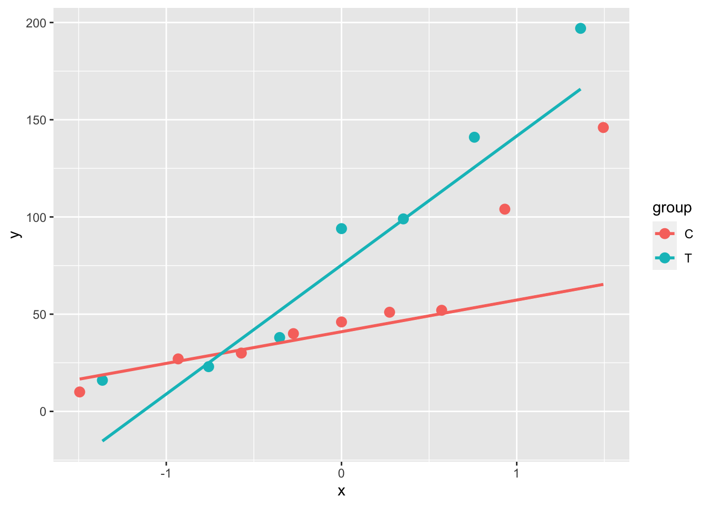
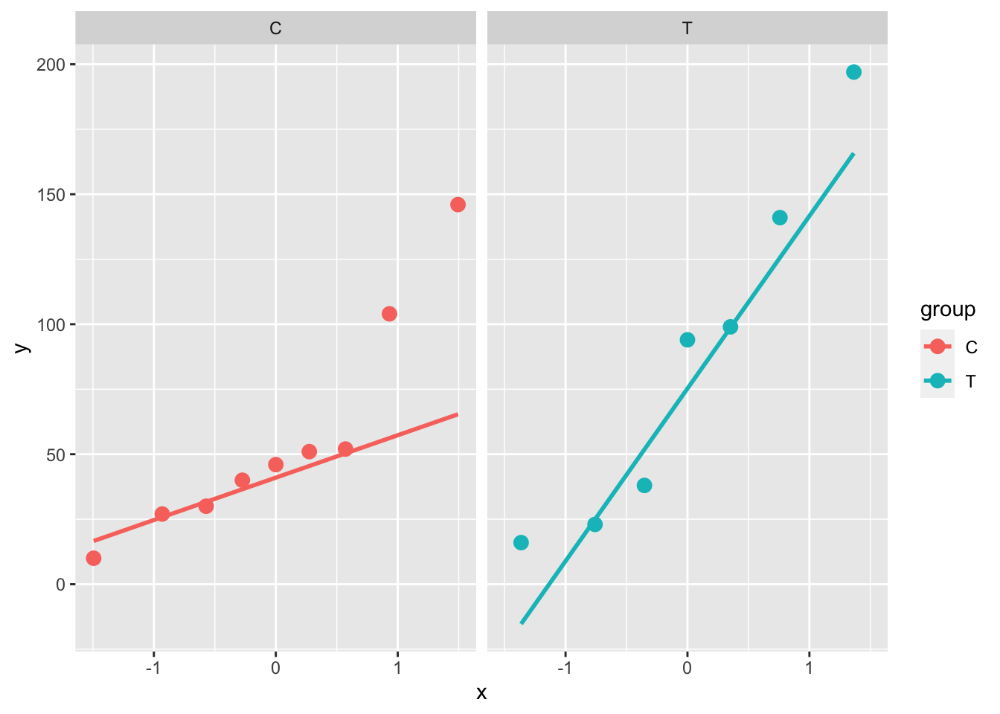
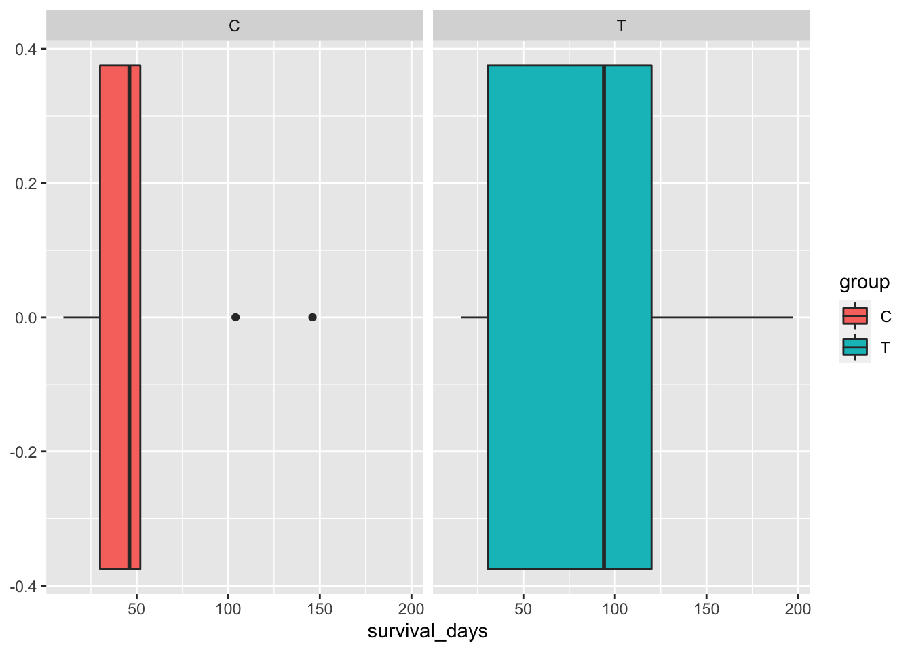
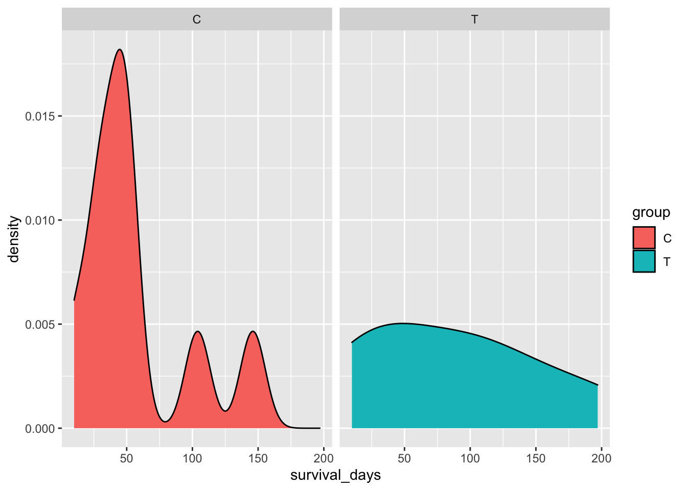
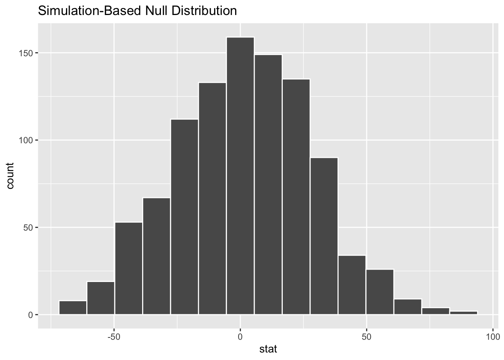
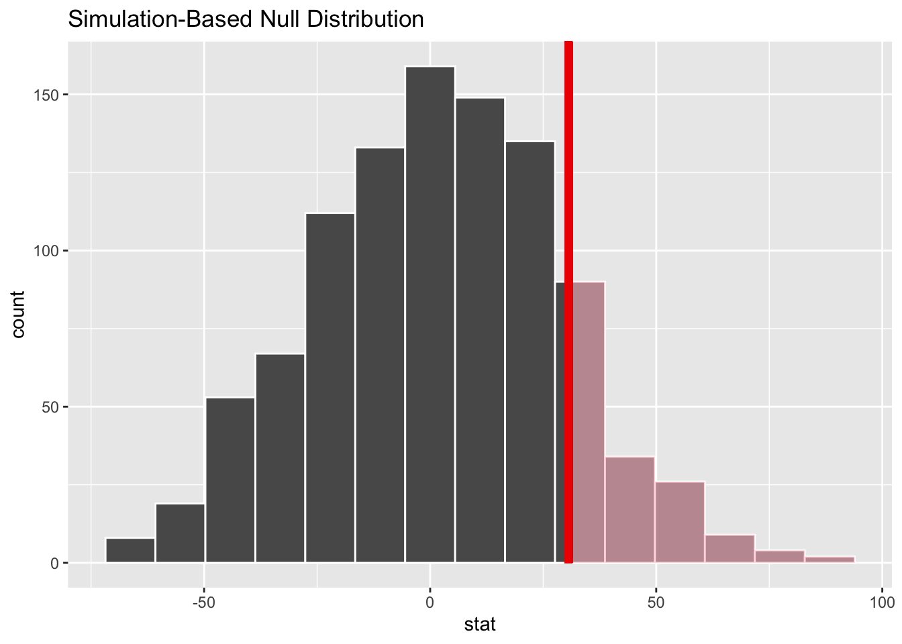

library(tidyverse)
library(infer)Mice data - Permutation Test
1 packages
2 Mice data from Efron and Tibshirani
x <- c(94, 197, 16, 38, 99, 141, 23)
x[1] 94 197 16 38 99 141 23treatment <- tibble(survival_days = x,
group = rep('T'))
treatment# A tibble: 7 × 2
survival_days group
<dbl> <chr>
1 94 T
2 197 T
3 16 T
4 38 T
5 99 T
6 141 T
7 23 T y <- c(52, 104, 146, 10, 51, 30, 40, 27, 46)
y[1] 52 104 146 10 51 30 40 27 46control <- tibble(survival_days = y,
group = rep('C'))
control# A tibble: 9 × 2
survival_days group
<dbl> <chr>
1 52 C
2 104 C
3 146 C
4 10 C
5 51 C
6 30 C
7 40 C
8 27 C
9 46 C Bind data together
mice <-
treatment %>%
bind_rows(control)
mice# A tibble: 16 × 2
survival_days group
<dbl> <chr>
1 94 T
2 197 T
3 16 T
4 38 T
5 99 T
6 141 T
7 23 T
8 52 C
9 104 C
10 146 C
11 10 C
12 51 C
13 30 C
14 40 C
15 27 C
16 46 C 3 summary checks
mice %>%
group_by(group) %>%
summarise(ave = mean(survival_days))# A tibble: 2 × 2
group ave
<chr> <dbl>
1 C 56.2
2 T 86.94 normality check
mice %>%
ggplot(aes(sample = survival_days, color = group)) +
stat_qq(size = 3) +
stat_qq_line(lwd = 1)
mice %>%
ggplot(aes(sample = survival_days, color = group)) +
stat_qq(size = 3) +
stat_qq_line(lwd = 1) +
facet_wrap(~group)
mice %>%
ggplot(aes(x = survival_days, fill = group)) +
geom_boxplot() +
facet_wrap(~group)
mice %>%
ggplot(aes(x = survival_days, fill = group)) +
geom_density() +
facet_wrap(~group)
5 not normal, what to do?
Permutation Test!
set.seed(987)
perm_dist <-
mice %>%
specify(survival_days~group) %>%
hypothesize(null = 'independence') %>%
generate(reps = 1000, type = 'permute') %>%
calculate(stat = 'diff in means',
order = c("T", "C"))
perm_dist %>%
visualize()
obs_stat <-
mice %>%
specify(survival_days~group) %>%
calculate(stat = 'diff in means',
order = c("T", "C"))
obs_statResponse: survival_days (numeric)
Explanatory: group (factor)
# A tibble: 1 × 1
stat
<dbl>
1 30.6set.seed(987)
p_value <-
perm_dist %>%
get_p_value(obs_stat = obs_stat,
direction = 'right')
p_value# A tibble: 1 × 1
p_value
<dbl>
1 0.136Shade the p-value
perm_dist %>%
visualise() +
shade_p_value(obs_stat = obs_stat,
direction = 'right')